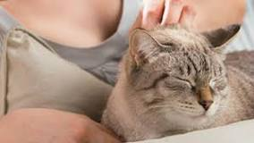
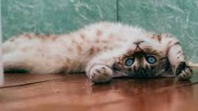

Titulo del post
Descripcion del post

Los gatos pueden rotar sus orejas 180 grados.
Los gatos pueden pasar hasta 14 horas dormidos.
Debido a su naturaleza nocturna, los gatos suelen
ser mucho más hiperactivos en la tarde. La audición del gato
promedio es al menos cinco veces más aguda que la de un adulto humano.
Titulo del post 2
Descripcion del post

Se ha comprobado que tener un gato reduce el estrés.
Normalmente los dueños de gatos tienen una tensión arterial
más baja que las personas sin mascotas. Puedes beneficiarte de un
sistema inmunológico más fuerte y recuperarte de las enfermedades
antes que las personas que no tienen animales de compañía.
Titulo del post 3
Descripcion del post

Los gatos son curiosos por naturaleza y les encanta explorar.
Son animales muy independientes y no les gusta depender de sus dueños.
Son animales domésticos que necesitan hacer mucho ejercicio al día,
es por ello, que son cazadores por naturaleza y pueden llegar a jugar
durante muchas horas.
Titulo del post 4
Descripcion del post
Como lo mencionamos anteriormente, los gatos ayudan a
combatir la ansiedad y estrés. Sin embargo, existe una
terapia con gatos la cual busca ayudar en la recuperación
de accidentes cardiovasculares, con solo pasar un rato en tu
regazo te tranquilizan haciendo que: Disminuya la presión sanguínea.
Reducir la ansiedad.